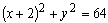
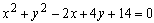
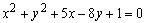
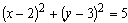

ЗАНЯТИЕ 3.5. КРИВЫЕ ВТОРОГО ПОРЯДКА: ОКРУЖНОСТЬ, ЭЛЛИПС
Контрольные вопросы
- Дать определение окружности, эллипса.
- Напишите канонические уравнения окружности, эллипса и объясните смысл величин, входящих в эти уравнения.
- Что характеризует эксцентриситет эллипса?
- Написать уравнения директрис эллипса, объяснить смысл величин в этих уравнениях, показать расположение директрис и эллипса на чертеже
Задачи
- Составить уравнение окружности в каждом из следующих случаев:
а) окружность проходит через точку А (2; 6), и ее центр совпадает с точкой С (-1; 2);
б) точки А (3; 2) и В (-1; 6) являются концами одного из диаметров окружности;
в) центр окружности совпадает с началом координат, и прямая
является касательной к окружности;
г) центр окружности совпадает с точкой С (1; - 1), и прямая
является касательной к окружности.
- Написать уравнение окружностей радиуса , касающихся прямой
 в точке М ( 3; 1).
в точке М ( 3; 1).
- Какие из нижеприводимых уравнений определяют окружности? Найти центр С
и радиус R каждой из них:
а) , б)  ,
в) , г) .
- Определить, при каких значениях углового коэффициента k прямая y =k x
а) пересекает окружность ;
б) касается этой окружности;
в) проходит вне этой окружности
- Вычислить расстояние от центра окружности
 до прямой, проходящей через точки пересечения двух окружностей:
до прямой, проходящей через точки пересечения двух окружностей:
 ,
.
- Составить уравнение эллипса, фокусы которого лежат на оси абсцисс, симметрично
относительно начала координат, зная, кроме того, что:
а) расстояние между его фокусами 2 с = 6 и эксцентриситет  ;
;
б) его большая ось равна 20, а эксцентриситет ;
в) его малая ось равна 10, а эксцентриситет  ;
;
г) расстояние между его директрисами равно 5 и расстояние между фокусами равно 4.
- Дан эллипс . Найти:
а) его полуоси;
б) фокусы;
в) эксцентриситет;
г) уравнения директрис.
- Через фокус эллипса проведен перпендикуляр к его большой
оси.
Определить расстояние от точек пересечения этого перпендикуляра
с эллипсом до фокусов.
- Составить уравнение эллипса, если известны его эксцентриситет ,
фокус F (- 4; 1) и уравнение соответствующей директрисы y + 3 = 0.
- Точка А (-3; -5) лежит на эллипсе, фокус которого F (-1; -4), а соответствующая директриса
дана уравнением . Составить уравнение этого эллипса.
- Точка М1 ( 3; - 1) является концом малой оси эллипса, фокусы которого лежат на прямой
.
Составить уравнение этого эллипса, зная его эксцентриситет .
- Найти точки пересечения прямой и
эллипса .
Ответы
- а) , б) ,
в) , г) ;
- ,  ;
- а) C (5; -2), R = 5,
б) C (- 2; 0), R = 8,
в) уравнение определяет единственную
точку (- 5; 2),
г) уравнение не определяет никакого геометрического образа на плоскости;
- а) , б) ,
в) ;
- 2;
- а) , б) ,
в) , г) ;
- а) 5 и 3, б) F1 (- 4; 0), F2 (4; 0), в) ,
г) ;
- 3 и 8;
- ;
- ;
-
 ;
;
- и (3; 2).